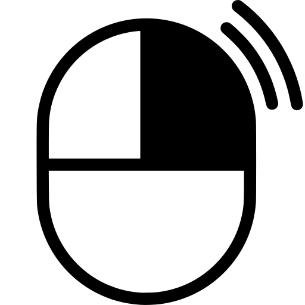
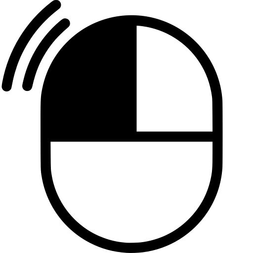
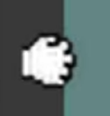
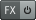

on the Arrangement Window
allows to draw the value over the channel length
Change some backups settings
Options 🢒 Preferences...Although optional, avoid having some knobs disappearing from the Item in the Track list everytime the mixer is opened
Options 🢒 Themes 🢒 Theme Adjuster / Color Controls
By default the loudness meters show the levels post-fader.
To change the loudness meter to measure the pre-fader value, check the following
To distinguish different media pieces overlapping on the same channel, change the following
OptionsWhen Auto-crossfade is disabled , by default many items overlapping are kept. We can change the behaviour to keep the selected item and to trim the other one.
Options 🢒 Trim content behind media items when editing → 🗹
a second way to reach the setting is to click on Auto-crossfade
Then check Trim content behind media items when editing → 🗹
sound effects (sfx) and processing effects (audio "modifiers")
processing effects are commonly referred to as plugins.
plugins are accessed through the

buttonTo mirror an item: Item 🢒 Item settings 🢒 Reverse active take → 🗹
| ctrl + M | → | Show/hide mixer |
| W | Home | → | Place the playhead to the start of the timeline |
| End | → | Place the playhead to the end of the timeline |
| alt + Enter | → | Open Project Settings |
| ctrl + P | → | Open Preferences |
| ctrl + alt + T | → | Show/hide Transport (Play/Record/Stop...) |
| S | → | Split the item on the playhead |
| R | → | Toggle Repeat |
| ctrl + | → | Drag an Item to duplicate it |
| alt + | → | Drag an Item to translate it's media content while maintaining the Item's placement and length |
| alt + | → | Drag on the Arrangement Window to create a Razor Edit selection |
| ctrl + R | → | Begin recording |
| V | → | Automate an item's volume |
| P | → | Automate an item's pan |
| T | → | Cycle between a single item's multiple takes/lanes |
| alt + X | → | Toggle auto Auto-crossfade between overlapping media |
| alt + S | → | Toggle Snapping |
| ctrl + alt + ↑ | → | Select the track above |
| ctrl + alt + ↓ | → | Select the track below |
| ctrl + | → | Clicking on or will disable every or |
| shift + W | → | Add Stretch Marker |
| alt + | → | Remove Stretch Marker |
February 18, 2026
Due date: March 11, 2026
Make a REAPER project with all of the instrument audio files the professor shared (download them).
The project starts with a few instruments, then more are added and it closes with a few instruments and lasts exactly 1 minute.
The tracks must be color coded, organised and be named appropriately. Use spacers if deemed appropriate.
Before sending the project don't forget to zip the whole project folder, otherwise the audio files won't be present.
So remember to share the .zip file instead of just the .rpp project file.
Update the track of the previous assignment and use ReaEQ on every track
The professor suggests to play with a V shape for the EQ.
Avoid creating long loops that don't change as it will be considered a cheat to fill time.
| Item | → | an abstract container that can hold audio/midi/video tracks |
| MIDI | → | Musical Instrument Digital Interface |
| Arrangement Window | → | Where the audio tracks are visually displayed and edited |
| Lanes | → | multiple recording retakes for a single item |
| Fader | → | a single item's volume knob/slider |
| Plugin | → | In software audio production, it is something that changes the audio in some way |
| ReaEQ | → | REAPER's built-in audio equalizer plugin. It changed the volume of specific frequencied of an audio item |
| ReaComp | → | REAPER's built-in audio compressor |
| dBFS | → | decibels relative to full scale. It's the scale we use to monitor the volume levels |
| Razor Edit | → |
Create a resizable multi-track selection that allows to quickly cut, delete and duplicate its content.
Unlike selecting individual items, the razor tool selection is indipendent of audio clips. |
| VST | → | Virtual Studio Technology is a widely used software interface for plugins. Developed by Steinberg Media Technologies GmbH |
The exam will be done using Reaper without any plugin.
Every assignment copleted in a satisfactory manner will count for +1 at the exam.
Missing assignment will count as -2 at the exam.